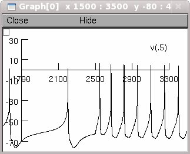

Dopaminergic (DA) neuron model with a morphologicaly realistic
dendritic architecture. The model captures several salient features of
DA neurons under several pharmacological manipulations and exhibits
depolarization block for sufficiently high current pulses into the
soma.
The model refers to the paper:
Anna Y. Kuznetsova, Marco A. Huertas, Alexey S. Kuznetsov, Carlos
A. Paladini and Carmen C. Canavier (2010) Regulation of firing
frequency in a computational model of a midbrain dopaminergic neuron
J Comput Neurosci. 2010 Jun;28(3):389-403.
The files included here correspond to the morphologically realistic
reconstructed model (see Figure 1 in paper) and reproduce results
presented in the paper:
1) Fig2a2.hoc Figure 2 (a2)
2) Fig2b2.hoc Figure 2 (b2)
3) Fig2f2.hoc Figure 2 (f2)
4) Fig6a_solid_trace Figure 6a: solid line corresponding to
100 pA stimulation current
5) Fig6a_dashed-line_trace Figure 6a: dashed line corresponding
to 500 pA stimulation current
The first three examples illustrate spontaneous firing of the model DA
neuron in control (1) and after blocking SK channel (2) and Na
channels (3).
Last two files show the response of the model DA neuron to simulated
current pulse to the soma for 100 pA (4) and 500 pA (5). In the last
case one can observe depolarization block.
You can run the simulation either by auto-launching from ModelDB, or
by first compiling the mechanisms as follows:
a) Under LINUX
Type
nrnivmodl
Then type
nrngui mosinit.hoc
b) Under Windows
Run mknrndll to compile the mod files in the top level
directory.
c) Under MAC - OS X
Drag and drop the archive file on the mknrndll icon (in the
NEURON application folder).
------------------------------
If running the individual files listed above:
Once Neuron has been started on your platform select in the main manu
Tools -> RunControl
Graph -> Voltage axis
then select
File -> load hoc
and choose the file you want to run. Finally press Init & Run.
------------------------------
If auto-launched then press a button corresponding to the figure
desired and you can generate figures like these:
Fig 2a2:
Fig 2b2:
Fig 2f2:
Fig 6a (solid trace):

Fig 6a (dashed trace):